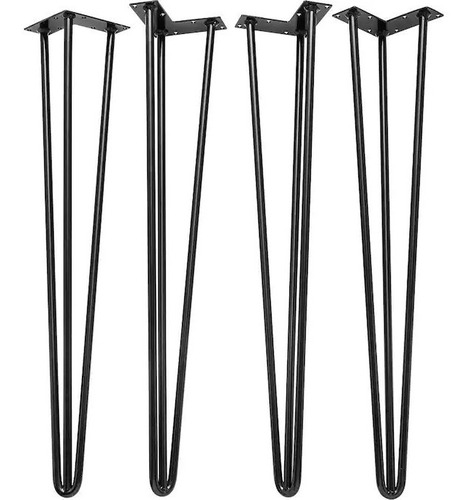
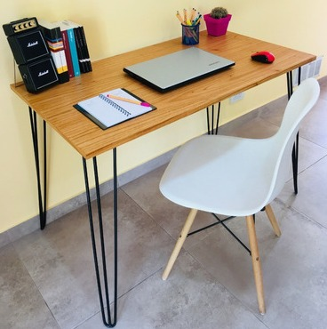
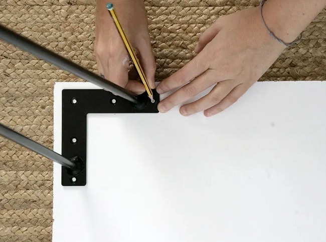

-PATAS HAIRPIN-LEG-
Este tipo de patas están fabricados con hierro macizo redondo y planchuela.

Ideales hacer tus propios escritorios, mesas, sillas, rack para tv, mesitas de luz, etc.

Cada pata hairpin cuenta con 4 perforaciones para poder amurar a cualquier mueble o madera de manera muy simple y rápida.

Excelentes terminaciones, materiales nuevos y de 1ra calidad.
Las medidas que trabajamos son:
- -20 cm de alto
- -30 cm de alto
- -40 cm de alto
- -50 cm de alto
- -60 cm de alto
- -70 cm de alto (triple)
- -75 cm de alto (triple)
- -80 cm de alto (triple)
- -85 cm de alto (triple)
- -90 cm de alto (triple)
- -95 cm de alto (triple)
- -100 cm de alto (triple)